03-Common APIs(常用API)
鸣谢：黑马程序员

Tip
Previous Chapter(上一章)：02-OOP(面向对象编程)
Next Chapter(下一章)：04-Exception(异常)
03-Common APIs(常用API)1.API文档2.包2.1 概述2.2 IDEA中设置自动导包2.3 调用其他包下程序的注意事项3.Scanner4.Random5.String5.1 String创建对象封装字符串数据的方式5.2 String的常用方法5.3 遍历字符串5.3.1 结合02方法5.3.2 结合03方法5.4 比较字符串5.5 08方法演示5.6 注意事项6.ArrayList6.1 构造器6.2 常用方法6.3 典型易错案例6.3.1 概述6.3.2 原代码分析6.3.3 debug方式一：每删除一个元素则索引减1方式二：倒序遍历并删除7.Object7.1 概述7.2 常用方法7.3 03方法讲解7.3.1 注意事项7.3.2 浅拷贝与深拷贝8.Objects8.1 概述8.2 常用方法8.3 01方法讲解9.包装类9.1 概述9.2 基本数据类型对应的包装类9.3 Integer9.3.1 包装方法9.3.2 自动装箱与自动拆箱机制9.4 包装类的常见操作（以Integer为例）10A.StringBuilder与StringBuffer10A.1 概述10A.2 构造器10A.3 常用方法10A.4 使用StringBuilder操作字符串的优势P1 原代码P2 使用StringBuilder优化后的代码P3 分析及启示10A.5 StringBuffer10A.6 综合案例10B.StringJoiner10B.1 概述10B.2 构造器10B.3 常用方法10B.4 使用StringJoiner重新实现综合案例10.611.Math常用方法12.System常用方法13.Runtime13.1 概述13.2 常用方法14.BigDecimal14.1 引入背景14.2 底层原理：为什么BigDecimal是精确的？14.3 构造器14.4 常用方法14.5 使用BigDecimal重构测试代码15.日期与时间15.1 JDK8之前传统的日期与时间（不推荐，仅用于老项目维护）15.1.1 DateP1 构造器P2 常用方法15.1.2 SimpleDateFormatP0 日期时间格式P1 构造器P2 常用方法15.1.3 练习：秒杀活动P1 需求P2 代码实现+控制台输出15.1.4 Calendar常用方法15.2 JDK8开始新增的日期与时间（推荐）15.2.1 为什么要学习新增的日期与时间？15.2.2 代替Calendar--Local家族P1 分类P2 获取对象的方法P3 三者通用方法P4 三者转换方法15.2.3 代替Calender--Zone家族P1 ZoneId：时区IDP2 ZoneDateTime：带时区的时间15.2.4 代替Date--InstantP1 概述P2 常用方法15.2.5 代替SimpleDateFormat--DateTimeFormatterP1 DateTimeFormatter提供的常用方法P2 LocalDateTime提供的格式化和解析日期时间的方法P3 代码示例+控制台输出15.2.6 其它P1 PeriodP2 Duration16A.Arrays16A.1 常用方法16A.2 04方法演示P1 需求P2 代码实现+控制台输出P3 结合Lambda表达式简化代码实现16B.Comparable与Comparator16B.1 引入背景16B.2 ComparableP0 compareTo方法使用指南P1 修改Student实体类P2 修改Test类P3 控制台（按年龄升序）16B.3 ComparatorP1 修改Test类P2 控制台（按身高升序）P3 使用Double包装类提供的compare方法简化上述代码
Important
API：Application Programming Interface，应用程序编程接口。
1.API文档
2.包
2.1 概述
包是用来分门别类地管理各种不同程序的，类似于文件夹。
建包有利于程序的管理和维护。
2.2 IDEA中设置自动导包
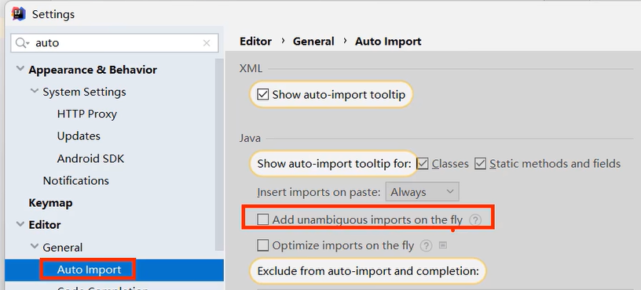
2.3 调用其他包下程序的注意事项
1.同一个包下的类可以互相直接调用。
2.若当前程序中需要调用其他包下的程序，则必须在当前程序中导包。
导包格式：
import 包名.类名;
3.java.lang包下的程序无需导包即可调用。
4.若当前程序中需要调用多个不同包下的程序，而这些程序名恰好一样，则此时默认只能导入一个程序，另一个程序必须带包访问。示例如下：
先创建两个包
package1和package2，在两个包里面创建一个名字相同的类Demo。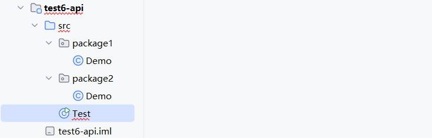
package1中的Demo类：x1package package1;23public class Demo {4public void print() {5System.out.println("this class locates in package1");6}7}package2中的Demo类：xxxxxxxxxx71package package2;23public class Demo {4public void print() {5System.out.println("this class locates in package2");6}7}此时若尝试在
Test类中同时导入这两个名字相同的类，则一定会报错。因为系统无法识别main方法中new出来的Demo类具体是哪一个。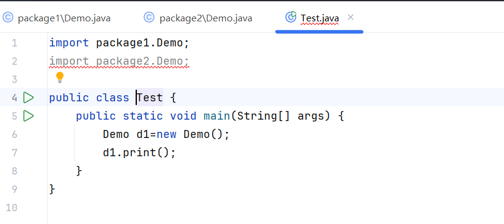
正确做法为带包访问，如下：
xxxxxxxxxx101import package1.Demo;23public class Test {4public static void main(String[] args) {5Demo d1 = new Demo();6d1.print();7package2.Demo d2 = new package2.Demo();//带包访问8d2.print();9}10}控制台：
xxxxxxxxxx21this class locates in package12this class locates in package2
3.Scanner
作用：接收用户键盘输入的数据。
代码示例：输出用户输入的年龄和名字。
xxxxxxxxxx151import java.util.Scanner;23public class Test {4public static void main(String[] args) {5Scanner sc = new Scanner(System.in);67System.out.println("请输入您的年龄：");8int age = sc.nextInt();9System.out.println("您的年龄是：" + age);1011System.out.println("请输入您的名字：");12String name = sc.next();13System.out.println("您的名字是：" + name);14}15}控制台：
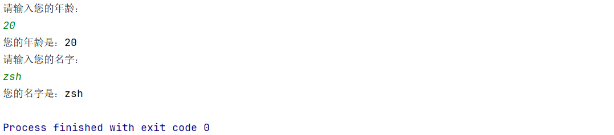
4.Random
作用：生成随机数。
代码示例：生成
xxxxxxxxxx141import java.util.Random;2import java.util.Scanner;34public class Test {5public static void main(String[] args) {6Scanner sc = new Scanner(System.in);7Random r = new Random();89System.out.println("请输入bound：");10int bound = sc.nextInt();11int number = r.nextInt(bound);12System.out.println("生成了[0," + bound + ")内的一个随机数：" + number);13}14}控制台：
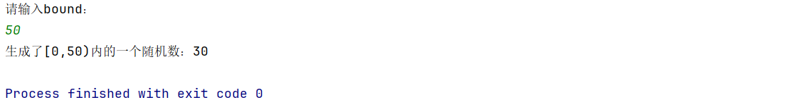
5.String
5.1 String创建对象封装字符串数据的方式
方式一：Java程序中的所有字符串（例如“abc”）都为String类的对象。
xxxxxxxxxx21String name="black";2String schoolName="HIT";方式二：调用String类的构造器来初始化字符串对象。
| 序号 | 构造器 | 说明 |
|---|---|---|
| 01 | public String() | 创建一个空字符串对象，不含任何内容。 |
| 02 | public String(String original) | 根据传入的字符串内容来创建字符串对象。 |
| 03 | public String(char[] chars) | 根据字符数组的内容来创建字符串对象。 |
| 04 | public String(byte[] bytes) | 根据字节数组的内容来创建字符串对象。 |
5.2 String的常用方法
| 序号 | 方法 | 说明 |
|---|---|---|
| 01 | int length() | 获取字符串的长度（即字符个数）并返回。 |
| 02 | char charAt(int index) | 获取索引位置处的字符并返回。 |
| 03 | char[] toCharArray() | 将当前字符串转换成字符数组并返回。 |
| 04 | boolean equals(Object anObject) | 判断当前字符串与另一字符串的内容是否一样，若一样则返回true。 |
| 05 | boolean equalsIgnoreCase(String anotherString) | 同上，但忽略内容字母的大小写。 |
| 06 | String subString(int beginIndex,int endIndex) | 根据起止索引截取字符串（包前不包后），返回截取后的字符串。 |
| 07 | String subString(int beginIndex) | 只根据起始索引截取字符串，一直截取到字符串末尾，返回截取后的字符串。 |
| 08 | String Replace(charSequence target,CharSequence replacement) | 使用新的字符片段替换旧的字符片段，返回新的字符串。 |
| 09 | boolean contains(Charsequence s) | 判断当前字符串中是否包含了某个字符片段，若是则返回true。 |
| 10 | boolean startsWith(String prefix) | 判断当前字符串是否以某个字符串为开头，若是则返回true。 |
| 11 | String[] spilt(String regex) | 将字符串按照指定的字符串内容进行分割，并返回分割后的字符串数组。 |
5.3 遍历字符串
5.3.1 结合02方法
| 序号 | 方法 | 说明 |
|---|---|---|
| 02 | char charAt(int index) | 获取索引位置处的字符并返回。 |
代码示例：
xxxxxxxxxx91public class StringDemo1 {2 public static void main(String[] args) {3 String s = "ArthurMorgan";4 for (int i = 0; i < s.length(); i++) {5 char ch = s.charAt(i);6 System.out.print(ch + " ");7 }8 }9}控制台输出结果：
xxxxxxxxxx11A r t h u r M o r g a n
5.3.2 结合03方法
| 序号 | 方法 | 说明 |
|---|---|---|
| 03 | char[] toCharArray() | 将当前字符串转换成字符数组并返回。 |
代码示例：
xxxxxxxxxx91public class StringDemo1 {2 public static void main(String[] args) {3 String s = "ArthurMorgan";4 char[] chars = s.toCharArray();5 for (int i = 0; i < chars.length; i++) {6 System.out.print(chars[i] + " ");7 }8 }9}控制台输出结果：
xxxxxxxxxx11A r t h u r M o r g a n
5.4 比较字符串
错误示例：直接用双等号比较字符串是最常见的错误。
xxxxxxxxxx31String s1=new String("zsh");2String s2=new String("zsh");3System.out.println(s1 == s2);控制台输出结果：
xxxxxxxxxx11false
正确方法：使用04方法。
序号 方法 说明 04 boolean equals(Object anObject)判断当前字符串与另一字符串的内容是否一样，若一样则返回 true。示例：
xxxxxxxxxx31String s1=new String("zsh");2String s2=new String("zsh");3System.out.println(s1.equals(s2));控制台输出结果：
xxxxxxxxxx11true
5.5 08方法演示
| 序号 | 方法 | 说明 |
|---|---|---|
| 08 | String Replace(charSequence target,CharSequence replacement) | 使用新的字符片段替换旧的字符片段，返回新的字符串。 |
代码示例：替换敏感词。
xxxxxxxxxx31String info = "这个电影简直是个垃圾，垃圾电影！！";2String rs = info.replace("垃圾","**");3System.out.println(rs);控制台输出结果：
xxxxxxxxxx11这个电影简直是个**，**电影！！
5.6 注意事项
1.String对象的内容不可改变，被称为不可变字符串对象。
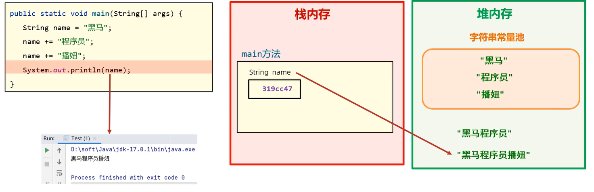
每次试图改变String对象时，实际上产生了新的String对象，旧的String对象的内容并没有改变，编译器只是将变量指向的String对象由旧对象修改为新对象。
2.只要是以"..."（包括new String("...")）方式写出的字符串对象，都会存放到堆内存中的字符串常量池，且相同内容的字符串只存储一份（节约内存），即它们的地址是一样的。
若通过String str = new String("...")来创建字符串对象，则每new一次都会产生一个新的对象存放于堆内存中。
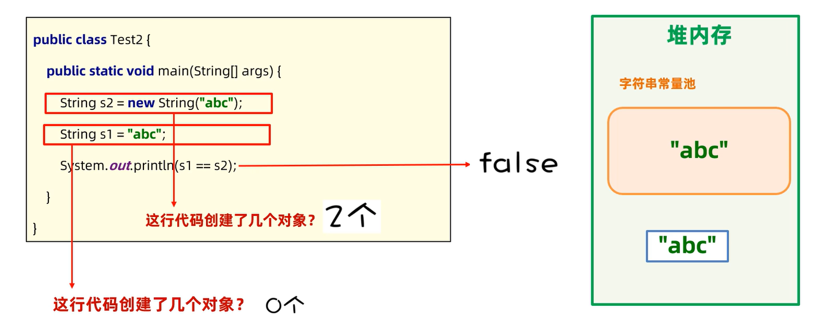
3.编译优化机制：
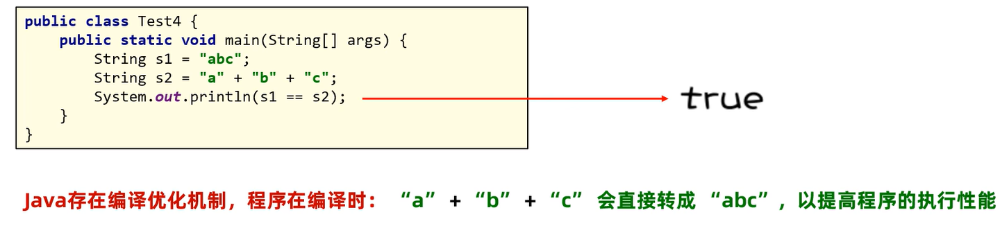
6.ArrayList
6.1 构造器
| 序号 | 构造器 | 说明 |
|---|---|---|
| 01 | public ArrayList() | 构造一个初始容量为10的空集合，后续会随需求自动扩容。 |
| 02 | public ArrayList(int initialCapacity) | 构造一个具有指定初始容量的空集合，后续会随需求自动扩容。 |
6.2 常用方法
| 序号 | 方法 | 说明 |
|---|---|---|
| 01 | boolean add(E e) | 将指定元素添加到集合末尾。 |
| 02 | void add(int index,E element) | 在集合的指定索引处插入指定元素。 |
| 03 | E get(int index) | 获取集合指定索引处的元素并返回。 |
| 04 | int size() | 获取集合的元素个数并返回。 |
| 05 | E remove(int index) | 删除集合指定索引处的元素，返回被删除的元素。 |
| 06 | boolean remove(Object o) | 删除集合的指定元素（默认删除第一次出现的元素），若删除成功则返回true。 |
| 07 | E set(int index,E element) | 修改集合指定索引处的元素，返回被修改前的元素。 |
6.3 典型易错案例
6.3.1 概述
需求：假如购物车中存储了如下商品：Java入门、宁夏枸杞、黑枸杞、人字拖、特级枸杞、枸杞子。现在用户不想买枸杞了，选择了批量删除含有“枸杞”二字的商品，请完成该需求。
分析：
使用
ArrayList集合表示购物车，并存储以上商品。遍历集合中的所有元素，若某元素包含“枸杞”二字则删除它。
打印集合到控制台以判断需求是否完成。
6.3.2 原代码分析
xxxxxxxxxx221import java.util.ArrayList;2
3public class Test {4 public static void main(String[] args) {5 ArrayList<String> list = new ArrayList<>();6 list.add("Java入门");7 list.add("宁夏枸杞");8 list.add("黑枸杞");9 list.add("人字拖");10 list.add("特级枸杞");11 list.add("枸杞子");12 System.out.println("原购物车：" + list);13
14 for (int i = 0; i < list.size(); i++) {15 String good = list.get(i);16 if (good.contains("枸杞")) {17 list.remove(good);18 }19 }20 System.out.println("删除枸杞后的购物车：" + list);21 }22}控制台输出结果：
xxxxxxxxxx21原购物车：[Java入门, 宁夏枸杞, 黑枸杞, 人字拖, 特级枸杞, 枸杞子]2删除枸杞后的购物车：[Java入门, 黑枸杞, 人字拖, 枸杞子]
观察发现，我们的代码出现了bug，“黑枸杞”和“枸杞子”这两个商品并没有删除掉，具体分析如下：
xxxxxxxxxx151i=0时，list[i]为"Java入门"，不含"枸杞"2购物车仍为：[Java入门, 宁夏枸杞, 黑枸杞, 人字拖, 特级枸杞, 枸杞子]3-------------------------------------------------------------4i=1时，list[i]为"宁夏枸杞"，含有"枸杞"，故从集合中删除掉5购物车变为：[Java入门, 黑枸杞, 人字拖, 特级枸杞, 枸杞子]6注意：此时"Java入门"后面的元素往前移动了一格，索引也随之减少了1，这就是bug的产生原因。7-------------------------------------------------------------8i=2时，list[i]为"人字拖"，不含"枸杞"9购物车仍为：[Java入门, 黑枸杞, 人字拖, 特级枸杞, 枸杞子]10注意："黑枸杞"这个元素由于索引变化而被我们的程序忽略了，由此产生了bug。11-------------------------------------------------------------12i=3时，list[i]为"特级枸杞"，含有"枸杞"，故从集合中删除掉13购物车变为：[Java入门, 黑枸杞, 人字拖, 枸杞子]14-------------------------------------------------------------15i=4时，list.size()已经缩减为4，二者相等，循环结束。
6.3.3 debug
方式一：每删除一个元素则索引减1
xxxxxxxxxx71for (int i = 0; i < list.size(); i++) {2 String good = list.get(i);3 if (good.contains("枸杞")) {4 list.remove(good);5 i--;6 }7}方式二：倒序遍历并删除
xxxxxxxxxx61for (int i = list.size()-1; i >= 0; i--) {2 String good = list.get(i);3 if (good.contains("枸杞")) {4 list.remove(good);5 }6}
7.Object
7.1 概述
Object类是Java中所有类的祖宗类，因此Java中所有类的对象都可以直接使用Object类中提供的一些方法。
7.2 常用方法
| 序号 | 方法 | 说明 |
|---|---|---|
| 01 | public String toString() | 返回对象的字符串表示形式，实际开发中主要交给子类重写，以便打印出对象的具体内容而非地址。 |
| 02 | public boolean equals(Object o) | 比较两个对象是否相等（默认比较地址），实际开发中主要交给子类重写，以便子类自定义比较规则。 |
| 03 | protected Object clone() | 克隆对象。由于protected，该方法只能在Object类所处包下的其他类中使用，子类若想使用则必须重写该方法。 |
注意：以上3个方法重写都可以通过IDEA快捷生成。
7.3 03方法讲解
7.3.1 注意事项
Tip1：若想使用该方法，则这个类必须重写该方法并且实现Cloneable接口，否则报错。
Cloneable接口源码：
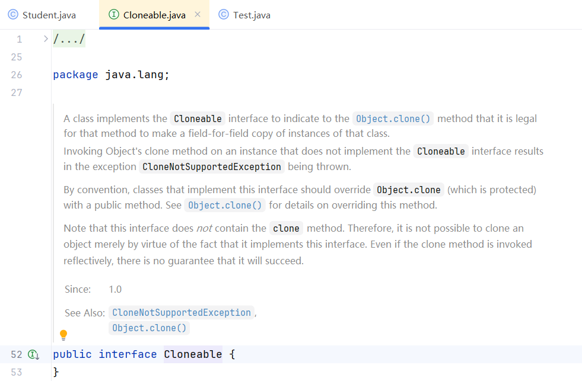
可以发现，该接口中什么内容都没有，这种接口称为标记接口，只有这样Java虚拟机才能识别并赋予这个类克隆对象的能力。
Tip2：此外还必须在main方法开头抛出CloneNotSupportedException异常，否则依旧报错。
xxxxxxxxxx61public class Test {2 public static void main(String[] args) throws CloneNotSupportedException {3 Student s1 = new Student("zsh", 20);4 Student s2 = (Student) s1.clone();//记得进行类型转换5 }6}
7.3.2 浅拷贝与深拷贝
Tip
也叫浅克隆与深克隆。
浅拷贝：拷贝出的对象与原对象中的数据一模一样（引用类型数据拷贝的只是地址）。
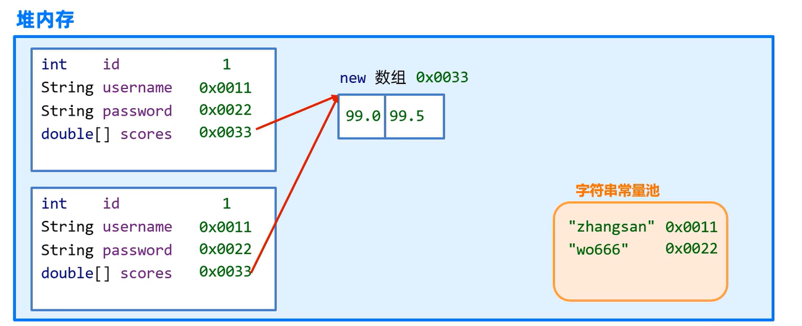
深拷贝：
对象中的基本类型数据直接拷贝。
对象中的字符串数据拷贝的还是地址。
对象中的其他引用类型数据不会拷贝地址，而会创建新对象。
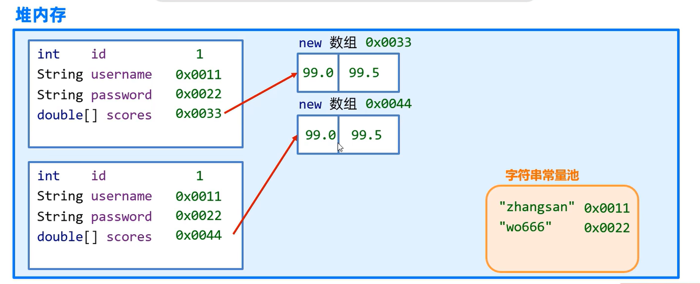
8.Objects
8.1 概述
Objects类是一个工具类，提供了很多操作对象的静态方法给我们使用，可以直接用Objects.类名的方式调用。
8.2 常用方法
| 序号 | 方法 | 说明 |
|---|---|---|
| 01 | static boolean equals(Object a,Object b) | 先做非空判断，再比较两个对象是否相等。 |
| 02 | static boolean isNull(Object obj) | 判断对象是否为空，是返回true。 |
| 03 | static boolean nonNull(Object obj) | 判断对象是否为非空，是返回true。 |
8.3 01方法讲解
思考：String已经提供了equals方法用于比较两个对象是否相等，为什么官方更推荐使用Objects.equals方法呢？
来看下面的例子：
xxxxxxxxxx101import java.util.Objects;2
3public class Test {4 public static void main(String[] args) {5 String s1 = null;6 String s2 = "itheima";7
8 System.out.println(s1.equals(s2));9 }10}控制台输出结果：
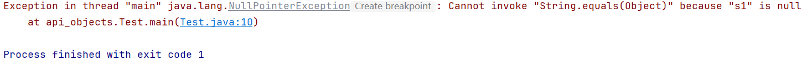
可以发现，代码产生了NullPointerException，即空指针异常。
现在，我们将代码第10行修改为System.out.println(Objects.equals(s1, s2));，再来看控制台输出结果：
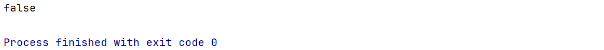
可以发现，控制台能够正常输出，说明代码已经没有bug了。
debug原因参见源码：
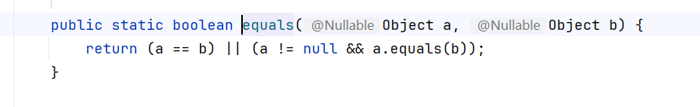
总结：使用Objects.equals方法能够避免入参中有null而产生空指针异常的问题，程序健壮性更好。
9.包装类
9.1 概述
包装类用于把基本数据类型包装成对象，从而实现Java“万物皆对象”的理念，同时也能更好地支持泛型。
9.2 基本数据类型对应的包装类
| 基本数据类型 | 对应的包装类（引用数据类型） |
|---|---|
byte | Byte |
short | Short |
int | Integer |
long | Long |
char | Character |
float | Float |
double | Double |
boolean | Boolean |
9.3 Integer
9.3.1 包装方法
| 方法 | 说明 |
|---|---|
static Integer valueOf(int i) | 将int类型的数据转换成Integer对象。 |
示例：Integer a = Integer.valueOf(12);
9.3.2 自动装箱与自动拆箱机制
自动装箱：可以自动把基本数据类型转换成对应的包装类对象。
示例：
Integer a1 = 12;
自动拆箱：可以自动把包装类对象转换成对应的基本数据类型。
示例：
xxxxxxxxxx21Integer a2 = 12;2int a3 = a2;//自动拆箱
9.4 包装类的常见操作（以Integer为例）
可以把基本数据类型转换成字符串类型：
public static String toString(double d)public String toString()
可以把字符串类型的数值转换成数值本身对应的数据类型：
public static int parseInt(String s)public static Integer valueOf(String s)
10A.StringBuilder与StringBuffer
10A.1 概述
StringBuilder代表可变字符串对象，相当于一个容器，里面装的字符串是可以改变的。StringBuilder就是用来操作字符串的。优点：
StringBuilder比String更适合做字符串的修改操作，效率更高，代码更简洁。
10A.2 构造器
| 序号 | 构造器 | 说明 |
|---|---|---|
| 01 | public StringBuilder() | 创建一个初始容量为16个字符的可变字符串对象，不含任何字符。 |
| 02 | public StringBuiler(String str) | 创建一个初始含有指定字符串内容的可变字符串对象。 |
10A.3 常用方法
| 序号 | 方法 | 说明 |
|---|---|---|
| 01 | StringBuilder append(任意类型) | 添加数据并返回StringBuilder对象本身，支持链式编程。 |
| 02 | StringBuilder reverse() | 反转对象内容。 |
| 03 | int length() | 返回对象内容长度（字符数）。 |
| 04 | String toString() | 将StringBuilder转换成String。 |
10A.4 使用StringBuilder操作字符串的优势
P1 原代码
xxxxxxxxxx91public class Test2 {2 public static void main(String[] args) {3 String rs = "";4 for (int i = 0; i < 1000000; i++) {5 rs += "abc";6 }7 System.out.println(rs);8 }9}运行此代码后，控制台迟迟未输出结果，只能手动终止，证明以上代码运行效率极低。
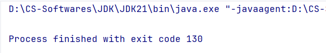
P2 使用StringBuilder优化后的代码
xxxxxxxxxx91public class Test2 {2 public static void main(String[] args) {3 StringBuilder stringBuilder=new StringBuilder();4 for (int i = 0; i < 1000000; i++) {5 stringBuilder.append("abc");6 }7 System.out.println(stringBuilder);8 }9}运行此代码后，控制台只用了1~2秒便输出结果，效率大大提高。
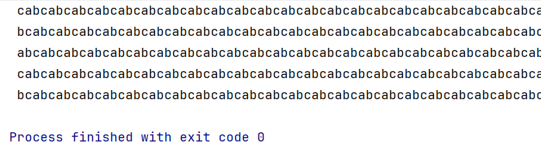
P3 分析及启示
分析：参见5.6 注意事项。
String是不可变字符串对象，也就是说它一旦被赋值就不可改变。每次试图改变String对象时，实际上产生了新的String对象，旧的String对象的内容并没有改变，编译器只是将变量指向的String对象由旧对象修改为新对象，因此原代码在for循环中每运行一次就会创建一个新的String对象，这大大增加了内存开销，导致运行效率极低。而
StringBuilder是可变字符串对象，这意味着在for循环中无论运行多少次，变量指向的都是最初的StringBuilder对象，内存开销减少，效率自然就上来了。
启示：
如果需要频繁拼接或修改字符串，建议使用
StringBuilder，效率会更高！如果对字符串操作较少，或者不需要操作字符串，只是为了定义字符串变量，则建议使用
String。
10A.5 StringBuffer
StringBuffer和StringBuilder的用法完全一致。区别：
StringBuffer是线程安全的，StringBuilder是线程不安全的。
10A.6 综合案例
需求：设计一个方法，将一个整型数组的内容输出为指定格式的字符串，形如
[11, 22, 33]。代码：
xxxxxxxxxx241public class Test3 {2public static void main(String[] args) {3System.out.println(transferArrayToFormattedString(new int[]{11, 22, 33}));4}56public static String transferArrayToFormattedString(int[] array) {7// 1.非空校验8if (array == null) {9return null;10}1112// 2.若array非空，则使用StringBuilder将其内容输出为指定格式的字符串13StringBuilder stringBuilder = new StringBuilder();14stringBuilder.append("[");15// 遍历到倒数第二个元素即可，否则最后一个元素末尾也会拼接", "16for (int i = 0; i < array.length - 1; i++) {17stringBuilder.append(array[i]).append(", ");18}19stringBuilder.append(array[array.length-1]).append("]");2021// 3.将StringBuilder对象转换为String对象再返回22return stringBuilder.toString();23}24}控制台：
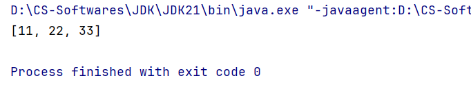
10B.StringJoiner
10B.1 概述
JDK8开始才推出的新API，和StringBuilder一样也是用来操作字符串的，也可以看作是一个容器，创建之后内容可变。优势：不仅能提高字符串的操作效率，而且在某些场景下使用它操作字符串，代码会更简洁，参见11.4
10B.2 构造器
| 序号 | 构造器 | 说明 |
|---|---|---|
| 01 | public StringJoiner(间隔符) | 创建一个StringJoiner对象，指定拼接时的间隔符。 |
| 02 | public StringJoiner(间隔符, 开始符, 结束符) | 创建一个StringJoiner对象，指定拼接时的间隔符、开始符和结束符。 |
10B.3 常用方法
| 序号 | 常用方法 | 说明 |
|---|---|---|
| 01 | StringJoiner add(CharSequence newElement) | 拼接字符序列，并返回对象本身。 |
| 02 | int length() | 返回对象内容长度（字符数）。 |
| 03 | String toString() | 返回拼接之后的字符串。 |
10B.4 使用StringJoiner重新实现综合案例10.6
代码：
xxxxxxxxxx231import java.util.StringJoiner;23public class Test3 {4public static void main(String[] args) {5System.out.println(transferArrayToFormattedString(new int[]{11, 22, 33}));6}78public static String transferArrayToFormattedString(int[] array){9// 1.非空校验10if (array == null) {11return null;12}1314// 2.若array非空，则使用StringJoiner将其内容输出为指定格式的字符串15StringJoiner stringJoiner=new StringJoiner(", ", "[", "]");16for (int i = 0; i < array.length; i++) {17stringJoiner.add(String.valueOf(array[i]));18}1920// 3.将StringJoiner对象转换为String对象再返回21return stringJoiner.toString();22}23}控制台：
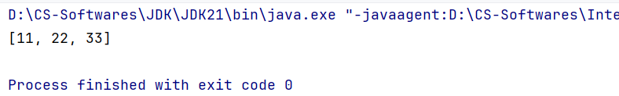
11.Math
数学类，是一个工具类，里面提供的都是对数据进行操作的一些静态方法。
常用方法
| 序号 | 方法 | 说明 |
|---|---|---|
| 01 | static int abs(int a) | 返回a的绝对值 |
| 02 | static double ceil(double a) | 对a向上取整 |
| 03 | static double floor(double a) | 对a向下取整 |
| 04 | static int round(float a) | 对a四舍五入 |
| 05 | static int max(int a, int b) | 返回a和b中的较大值 |
| 06 | static double pow(double a, double b) | 返回 |
| 07 | static double random() | 返回一个double类型的伪随机数，范围是 |
12.System
代表程序所在的系统，也是一个工具类。
常用方法
| 序号 | 方法 | 说明 |
|---|---|---|
| 01 | static void exit(int status) | 退出当前运行的JVM，status取0时表示正常退出，取其它值表示异常退出。 |
| 02 | static long currentTimeMillis() | 以毫秒形式返回当前系统时间戳。 |
13.Runtime
13.1 概述
Runtime指代程序所在的运行环境，分析源码可知它是一个单例类。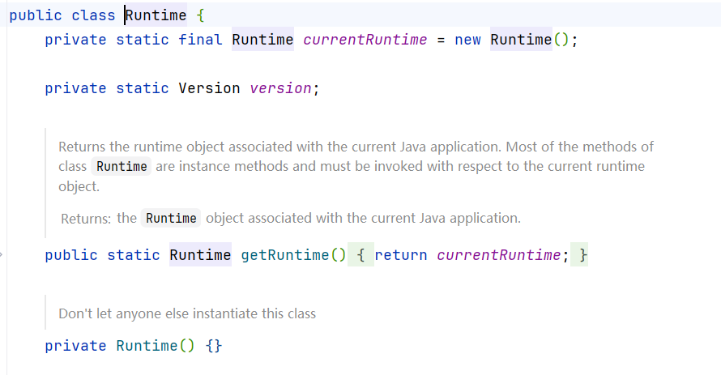
13.2 常用方法
| 序号 | 方法 | 说明 |
|---|---|---|
| 01 | static Runtime getRuntime() | 返回与当前Java应用程序关联的运行时对象。 |
| 02 | void exit(int status) | 退出当前运行的JVM。 |
| 03 | int availableProcessors() | 返回JVM可用的处理器数量。 |
| 04 | long totalMemory() | 返回JVM中的内存总量（单位：字节）。 |
| 05 | long freeMemory() | 返回JVM中的可用内存量（单位：字节）。 |
| 06 | Process exec(String command) | 执行某个进程，并返回代表该进程的对象。 |
14.BigDecimal
14.1 引入背景
BigDecimal是为了解决浮点数运算时结果失真的问题。
首先编写以下测试代码：
xxxxxxxxxx71public class Test1 {2 public static void main(String[] args) {3 double a = 0.1;4 double b = 0.2;5 System.out.println(a + "+" + b + "=" + (a + b));6 }7}代码运行后控制台输出结果与我们的常识不符：
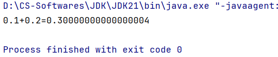
这是由于浮点数精度是有限的，因为0.1和0.2是二进制下的无限循环小数，所以它们转换成IEEE754双精度浮点数后势必丢失精度，因此结果转换回十进制会不精确。
14.2 底层原理：为什么BigDecimal是精确的？
BigDecimal根本不把数字存储为二进制小数。它直接存储十进制数字的每一位（作为整数），并记录小数点位置。所有的计算都是基于整数运算完成的，因此可以精确表示像 0.1和0.2这样的数。
14.3 构造器
| 序号 | 构造器 | 说明 |
|---|---|---|
| 01 | public BigDecimal(double val) | 将double类型变量转换为BigDecimal类型变量，不推荐使用。 |
| 02 | public BigDecimal(String val) | 将String类型变量转换为BigDecimal类型变量。 |
14.4 常用方法
| 序号 | 方法 | 说明 |
|---|---|---|
| 01 | staic BigDecimal valueOf(double val) | 将double类型变量转换为BigDecimal类型变量，推荐使用。 |
| 02 | BigDecimal add(BigDecimal b) | 加 |
| 03 | BigDecimal subtract(BigDecimal b) | 减 |
| 04 | BigDecimal multiply(BigDecimal b) | 乘 |
| 05 | BigDecimal divide(BigDecimal b) | 除 |
| 06 | BigDecimal divide(BigDecimal b, 精确几位, 舍入模式) | 除，可以控制精确到小数点后几位和采用何种舍入模式。 |
| 07 | double doubleValue() | 将BigDecimal类型变量转换为double类型变量。 |
14.5 使用BigDecimal重构测试代码
代码：
xxxxxxxxxx91public class Test1 {2public static void main(String[] args) {3double a = 0.1;4double b = 0.2;5BigDecimal a1 = BigDecimal.valueOf(a);6BigDecimal b1 = BigDecimal.valueOf(b);7System.out.println(a + "+" + b + "=" + a1.add(b1));8}9}控制台：输出了正确结果，没有发生精度丢失。
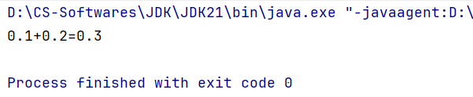
15.日期与时间
15.1 JDK8之前传统的日期与时间（不推荐，仅用于老项目维护）
15.1.1 Date
代表日期和时间。
P1 构造器
| 序号 | 构造器 | 说明 |
|---|---|---|
| 01 | public Date() | 创建一个Date对象，代表系统此时此刻的日期和时间。 |
| 02 | public Date(long time) | 把当前时间的毫秒值转换成Date对象。 |
P2 常用方法
| 序号 | 方法 | 说明 |
|---|---|---|
| 01 | long getTime() | 返回当前时间戳的毫秒值。 |
| 02 | void setTime(long time) | 将Date对象的时间设置为time。 |
15.1.2 SimpleDateFormat
代表简单日期格式化，可以将
Date对象或时间戳格式化成指定形式。
P0 日期时间格式
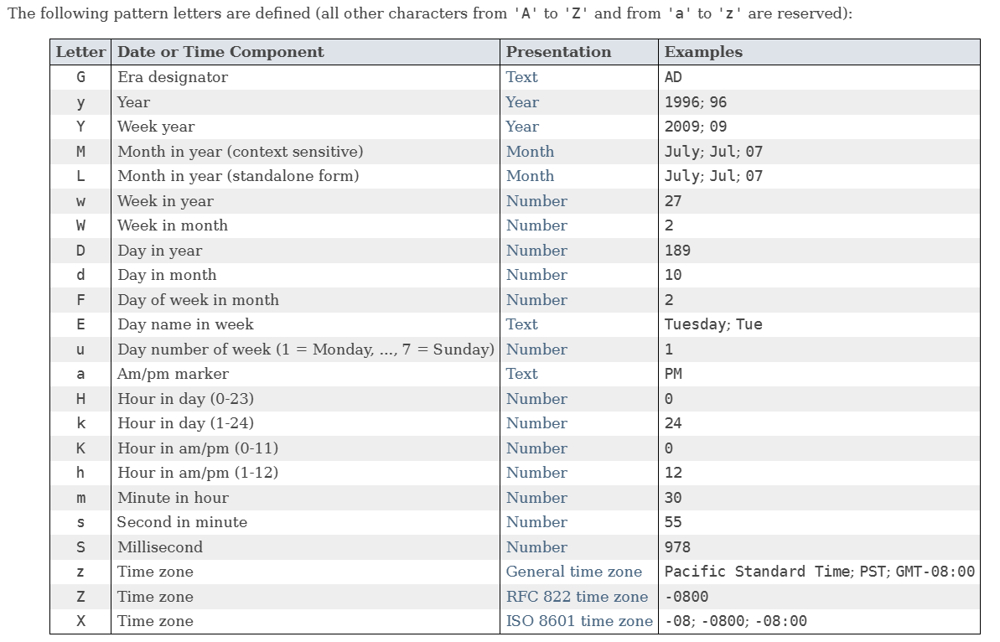
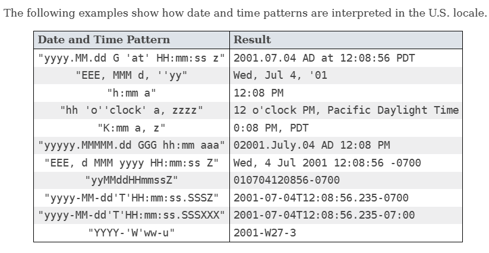
P1 构造器
| 序号 | 构造器 | 说明 |
|---|---|---|
| 01 | public SimpleDateFormat(String pattern) | 创建一个SimpleDateFormat对象，并封装我们指定的日期时间格式。 |
P2 常用方法
| 序号 | 方法 | 说明 |
|---|---|---|
| 01 | final String format(Date date) | 将Date对象格式化成日期时间字符串。 |
| 02 | final String format(Object time) | 将时间戳格式化成日期时间字符串。 |
| 03 | Date parse(Stirng source) | 将日期时间字符串解析成Date对象。注意：创建的 SimpleDateFormat对象的日期时间格式必须与source的日期格式保持一致，否则报错。 |
15.1.3 练习：秒杀活动
P1 需求
P2 代码实现+控制台输出
xxxxxxxxxx421import java.text.ParseException;2import java.text.SimpleDateFormat;3
4public class FlashSale {5 private static final String START_TIME = "2023年11月11日 0:00:00";6 private static final String END_TIME = "2023年11月11日 0:10:00";7 private static final String XIAO_JIA_PAY_TIME = "2023年11月11日 0:01:18";8 private static final String XIAO_PI_PAY_TIME = "2023年11月11日 0:10:51";9
10 public static void main(String[] args) throws ParseException {11
12 long startTime = parseDateToTime(START_TIME);13 long endTime = parseDateToTime(END_TIME);14 long xiaoJiaPayTime = parseDateToTime(XIAO_JIA_PAY_TIME);15 long xiaoPiPayTime = parseDateToTime(XIAO_PI_PAY_TIME);16
17 if (getQuality(xiaoJiaPayTime, startTime, endTime)) {18 System.out.println("小贾参加了秒杀活动");19 } else {20 System.out.println("小贾没有参加秒杀活动");21 }22
23 if (getQuality(xiaoPiPayTime, startTime, endTime)) {24 System.out.println("小皮参加了秒杀活动");25 } else {26 System.out.println("小皮没有参加秒杀活动");27 }28 }29
30 private static long parseDateToTime(String dateString) throws ParseException {31 SimpleDateFormat dateFormat = new SimpleDateFormat("yyyy年MM月dd日 H:mm:ss");32 return dateFormat.parse(dateString).getTime();33 }34
35 private static boolean getQuality(long payTime, long startTime, long endTime) {36 if (payTime >= startTime && payTime <= endTime) {37 return true;38 } else {39 return false;40 }41 }42}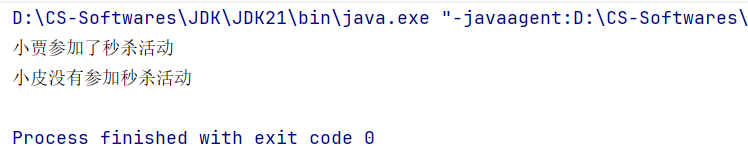
15.1.4 Calendar
代表此时此刻对应的日历，通过
Calendar可以单独获取和修改Date对象中的年、月、日、时、分、秒等等，
常用方法
| 序号 | 方法 | 说明 |
|---|---|---|
| 01 | static Calendar getInstance() | 获取当前日历对象。 |
| 02 | int get(int field) | 获取日历中的某个信息。 |
| 03 | final Date getTime() | 获取Date对象， |
| 04 | long getTimeMillis() | 获取时间戳。 |
| 05 | void set(int field, int value) | 修改日历的某个信息。 |
| 06 | void add(int field, int amount) | 为某个信息增加指定的值。（也可以减少，amount取负值即可） |
15.2 JDK8开始新增的日期与时间（推荐）
15.2.1 为什么要学习新增的日期与时间？
传统日期与时间的局限性：
设计不合理，使用不方便，大多数被淘汰了。
都是可变对象，修改后会丢失最开始的日期时间信息。
线程不安全。
只能精确到毫秒级。
新增日期与时间的优势：
设计更合理，使用更方便，功能丰富。
都是不可变对象，修改后会返回新的时间对象，不会丢失最开始的日期时间信息。
线程安全。
能精确到纳秒级。
15.2.2 代替Calendar--Local家族
Warning
以下行文中，LocalXxx指代LocalDate/LocalTime/LocalDateTime，
Yyy指代Year/MonthValue/DayOfMonth/DayOfYear/Hour/Minute/Second/Nano（即下文所述的“某个信息”）。
P1 分类
LocalDate：本地日期（年、月、日、星期）。LocalTime：本地时间（时、分、秒、纳秒）。LocalDateTime：本地日期时间（年、月、日、星期、时、分、秒、纳秒）。
P2 获取对象的方法
| 序号 | 方法 | 说明 |
|---|---|---|
| 01 | static LocalXxx now() | 获取系统当前时间对应的LocalXxx对象。 |
| 02 | static LocalXxx of(param1, param2, ...) | 获取指定时间的LocalXxx对象。 |
P3 三者通用方法
| 序号 | 方法 | 说明 |
|---|---|---|
| 01 | int getYyy() | 获取某个信息（年/月/日/时/分/秒/纳秒...） |
| 02 | DayOfWeek getDayOfWeek() | 获取今天是当周第几日。 获取星期几： int dayOfWeek = localDate.getDayOfWeek().getValue() |
| 03 | LocalXxx withYyy() | 直接修改某个信息。 |
| 04 | LocalXxx plusYyy(long toAdd) | 为某个信息增加指定的值。 |
| 05 | LocalXxx minusYyy(long toSubstract) | 为某个信息减少指定的值。 |
| 06 | boolean equals(LocalXxx anotherLocal) | 判断该LocalXxx对象是否等于另一个LocalXxx对象。 |
| 07 | boolean isBefore(LocalXxx anotherLocal) | 判断该LocalXxx对象是否早于另一个LocalXxx对象。 |
| 08 | boolean isAfter(LocalXxx anotherLocal) | 判断该LocalXxx对象是否晚于另一个LocalXxx对象。 |
P4 三者转换方法
| 序号 | 方法 | 说明 |
|---|---|---|
| 01 | LocalDate toLocalDate() | 把LocalDateTime对象转换成LocalDate对象。 |
| 02 | LocalTime toLocalTime() | 把LocalDateTime对象转换成LocalTime对象。 |
| 03 | static LocalDateTime of(LocalDate date, LocalTime time) | 把LocalDate对象和LocalTime对象合并成LocalDateTime对象。 |
15.2.3 代替Calender--Zone家族
P1 ZoneId：时区ID
| 序号 | 静态方法 | 说明 |
|---|---|---|
| 01 | static ZoneId systemDefault() | 获取系统默认时区ID。 |
| 02 | static Set<String> fetAvailableZoneIds() | 获取Java支持的全部时区ID。 |
| 03 | static ZoneId of(String zoneId) | 把某个时区ID封装成ZoneId对象。 |
P2 ZoneDateTime：带时区的时间
Tip
同样支持Local家族的通用方法，参见三者通用方法。
| 序号 | 静态方法 | 说明 |
|---|---|---|
| 01 | static ZoneDateTime now(ZoneId zoneId) | 获取某个时区的ZoneDateTime对象。 |
| 02 | static ZoneDateTime now(Clock.systemUTC()) | 获取世界标准时间UTC。 |
| 03 | static ZoneDateTime now() | 获取系统默认时区的ZoneDateTime对象。 |
15.2.4 代替Date--Instant
P1 概述
Instant代表时间线上的某个时刻，也叫时间戳。通过获取
Instant对象可以拿到当前时刻，该时刻由两部分组成：从1970-01-01 00:00:00（计算机元年）开始走到该时刻经历的总秒数。
剩余的不足1秒的纳秒数。
作用：
记录代码执行时间，进行代码性能分析；
记录用户操作某个事件的时间点。
P2 常用方法
| 序号 | 方法 | 说明 |
|---|---|---|
| 01 | static Instant now() | 获取当前时刻的Instant对象（UTC）。 |
| 02 | long getEpochSecond() | 获取从计算机元年开始走到该时刻经历的总秒数。 |
| 03 | int getNano() | 获取剩余的不足1秒的纳秒数。 |
| 04 | Instant plusSeconds/Millis/Nanos(long toAdd) | 为某个信息增加指定的值。 |
| 05 | Instant minusSeconds/Millis/Nanos(long toSubstract) | 为某个信息减少指定的值。 |
| 06 | boolean equals/isBefore/isAfter(Instant anotherInstant) | 判断该Instant对象是否等于/早于/晚于另一个Instant对象。 |
15.2.5 代替SimpleDateFormat--DateTimeFormatter
日期时间格式化器，用于日期时间的格式化和解析。
P1 DateTimeFormatter提供的常用方法
| 序号 | 方法 | 说明 |
|---|---|---|
| 01 | static DateTimeFormatter ofPattern(日期时间格式) | 获取格式化器对象。 |
| 02 | String format(日期时间对象) | 正向格式化日期时间。 |
P2 LocalDateTime提供的格式化和解析日期时间的方法
| 序号 | 方法 | 说明 |
|---|---|---|
| 01 | String format(DateTimeForamtter formatter) | 反向格式化日期时间。 |
| 02 | static LocalDateTime parse(CharSequence text, DateTimeFormatter formatter) | 解析时间。 |
P3 代码示例+控制台输出
xxxxxxxxxx211import java.time.LocalDateTime;2import java.time.format.DateTimeFormatter;3
4public class DateTimeFormatterTest {5 public static void main(String[] args) {6 DateTimeFormatter formatter = DateTimeFormatter.ofPattern("yyyy/MM/dd HH:mm:ss");7
8 LocalDateTime now = LocalDateTime.now();9 System.out.println(now);10
11 String rs1 = formatter.format(now);// 正向格式化12 System.out.println("rs1: " + rs1);13
14 String rs2 = now.format(formatter);// 反向格式化15 System.out.println("rs2: " + rs2);16
17 String dateTimeStr = "2026/01/01 00:00:00";18 LocalDateTime localDateTime = LocalDateTime.parse(dateTimeStr, formatter);19 System.out.println(localDateTime);20 }21}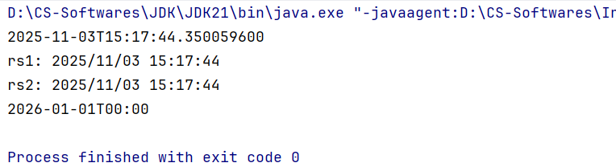
15.2.6 其它
P1 Period
Warning
可以且只能用于计算两个LocalDate对象相差的年数、月数、日数。
示例：2020-01-01与2026-02-08间隔6年、1月、7日。
| 序号 | 常用方法 | 说明 |
|---|---|---|
| 01 | static Period between(LocalDate start, LocalDate end) | 传入两个LocalDate对象，得到Period对象。 |
| 02 | int getYears/Months/Days() | 计算并返回间隔的年数/月数/日数。 |
P2 Duration
Caution
可以用于计算两个日期时间对象（包括LocalTime, LocalDateTime, Instant）相差的日数、小时数、分钟数、秒数、毫秒数、纳秒数。
示例：2026-01-01 00:00:00与2026-02-08 12:30:30间隔38日、924小时、55470分钟、3328230秒。
| 序号 | 常用方法 | 说明 |
|---|---|---|
| 01 | static Duration between(日期时间对象 start, 日期时间对象 end) | 传入两个日期时间对象对象，得到Duration对象。 |
| 02 | long toDays/Hours/Minutes/Seconds/Millis/Nanos() | 计算并返回间隔的日数/小时数/分钟数/秒数/毫秒数/纳秒数。 |
16A.Arrays
用来操作数组的一个工具类。
16A.1 常用方法
| 序号 | 方法 | 说明 |
|---|---|---|
| 01 | static String toString(类型[] arr) | 返回数组内容。 |
| 02 | static int[] copyOfRange(类型[] arr, int startIndex, int endIndex) | 按指定范围将原数组拷贝到新数组，包前不包后。 |
| 03 | static copyOf(类型[] arr, int newLength) | 将原数组拷贝到新数组 ，同时可指定新数组的长度，即数组扩容。 |
| 04 | static setAll(double[] arr, IntToDoubleFunction generator) | 把数组中的原数据修改为新数据。 |
| 05 | static void sort(类型[] arr) | 对数组进行排序（默认升序）。 |
16A.2 04方法演示
P1 需求
把一个数组prices存储的所有价格数据都打8折，然后存回去。
P2 代码实现+控制台输出
注意：实际上04方法static setAll(double[] arr, IntToDoubleFunction generator)的第2个形参是要我们传入一个临时新建的匿名内部类。
xxxxxxxxxx181import java.util.Arrays;2import java.util.function.IntToDoubleFunction;3
4public class Test1 {5 public static void main(String[] args) {6 double[] prices = {99.8, 128, 100};7 System.out.println("原价：" + Arrays.toString(prices));8 9 Arrays.setAll(prices, new IntToDoubleFunction() {10 11 public double applyAsDouble(int value) {// value即数组索引12 return prices[value] * 0.8;13 }14 });15 System.out.println("折后价：" + Arrays.toString(prices));16 }17}18
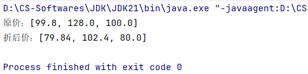
P3 结合Lambda表达式简化代码实现
xxxxxxxxxx141import java.util.Arrays;2import java.util.function.IntToDoubleFunction;3
4public class Test1 {5 public static void main(String[] args) {6 double[] prices = {99.8, 128, 100};7 System.out.println("原价：" + Arrays.toString(prices));8
9 Arrays.setAll(prices, (value) -> {10 return prices[value] * 0.8;11 });12 System.out.println("折后价：" + Arrays.toString(prices));13 }14}
16B.Comparable与Comparator
16B.1 引入背景
如果数组中存储的是对象，我们应该如何排序？
新建一个实体类(JavaBean)--Student类：
xxxxxxxxxx151package arrays;2
3public class Student {4 private String name;5 private double height;6 private int age;7 8 public Student(String name, double height, int age) {9 this.name = name;10 this.height = height;11 this.age = age;12 }13
14 // 省略getter&setter15}然后在Test类中尝试使用Arrays的05排序方法对一个Student数组进行排序，参见17.1 常用方法。
xxxxxxxxxx151package arrays;2
3import java.util.Arrays;4
5public class Test {6 public static void main(String[] args) {7 Student[] students = new Student[4];8 students[0] = new Student("Zsh", 173.5, 20);9 students[1] = new Student("Zjl", 178.0, 19);10 students[2] = new Student("Zxj", 161.5, 15);11 students[3] = new Student("Czb", 188.8, 15);12
13 Arrays.sort(students);14 }15}运行上述代码后，控制台输出如下：
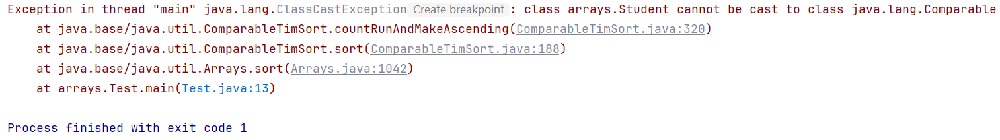
可以看到代码直接报错，说明这种方法不能直接对存储了对象的数组进行排序，原因是没有指定具体的排序规则，Java不知道如何进行排序，因此我们引入了Comparable与Comparator，用于自定义排序规则。
16B.2 Comparable
Tip
让实体类实现Comparable<T>这个泛型接口，然后重写compareTo方法，自定义比较规则。这时候再用Arrays的05排序方法即可以成功对Student数组进行排序了。
P0 compareTo方法使用指南
入门：
xxxxxxxxxx241/**2 * @param o the object to be compared.3 *4 * 自定义比较规则：this 和 T o 进行比较5 * 升序情况下：6 * 若想要 this>o ，则返回正整数；7 * 若想要 this<o ，则返回负整数；8 * 若想要 this=o ，则返回0。9 *10 * 降序情况下：11 * 若想要 this>o ，则返回负整数；12 * 若想要 this<o ，则返回整整数；13 * 若想要 this=o ，则返回0。14 */15public int compareTo(T o) {17 if(this.param > o.param){18 return ...;19 } else if(this.param < o.param){20 return ...;21 } else{22 return 0;23 }24}进阶（开发中更推荐，但要注意只适用于
param是int类型的情况，其他情况下仍然按照入门指南编码，防止bug）：
xxxxxxxxxx121/**2 * @param o the object to be compared.3 *4 * 自定义比较规则：this 和 T o 进行比较5 * 升序情况下：return this.param - o.param;6 * 降序情况下：return o.param - this.param;7 * 简记：升序this在前，降序this在后8 */9public int compareTo(T o) {11 return this.param - o.param;// 升序12}
P1 修改Student实体类
xxxxxxxxxx251package arrays;2
3public class Student implements Comparable<Student> {4 private String name;5 private double height;6 private int age;7
8 public Student(String name, double height, int age) {9 this.name = name;10 this.height = height;11 this.age = age;12 }13
14 15 public int compareTo(Student o) {16 return this.age - o.age;// 按年龄升序17 }18
19 20 public String toString() {21 return "name: "+name+", height: "+height+", age: "+age+";";22 }23 24 // 省略getter&setter 25}
P2 修改Test类
xxxxxxxxxx201package arrays;2
3import java.util.Arrays;4import java.util.StringJoiner;5
6public class Test {7 public static void main(String[] args) {8 Student[] students = new Student[4];9 students[0] = new Student("Zsh", 173.5, 20);10 students[1] = new Student("Zjl", 178.0, 19);11 students[2] = new Student("Zxj", 161.5, 15);12 students[3] = new Student("Czb", 188.8, 15);13
14 Arrays.sort(students);15 String[] sortedStudents=Arrays.toString(students).split(";");16 for (String sortedStudent : sortedStudents) {17 System.out.println(sortedStudent);18 }19 }20}
P3 控制台（按年龄升序）
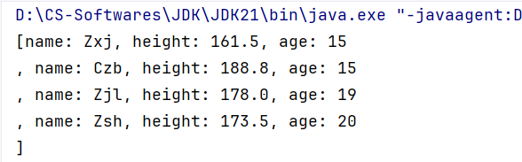
16B.3 Comparator
Tip
使用Arrays类提供的重载方法static <T> void sort(T[] arr, Comparator<? super T> comparator)，传入待排序数组和一个Comparator接口的匿名内部类对象，然后自定义比较规则。
P1 修改Test类
xxxxxxxxxx341package arrays;2
3import java.util.Arrays;4import java.util.Comparator;5import java.util.StringJoiner;6
7public class Test {8 public static void main(String[] args) {9 Student[] students = new Student[4];10 students[0] = new Student("Zsh", 173.5, 20);11 students[1] = new Student("Zjl", 178.0, 19);12 students[2] = new Student("Zxj", 161.5, 15);13 students[3] = new Student("Czb", 188.8, 15);14
15 // 可用Lambda表达式简化，此处为了增强可读性不使用16 Arrays.sort(students, new Comparator<Student>() {// 按身高升序，遵照入门指南17 18 public int compare(Student o1, Student o2) {19 if (o1.getHeight() > o2.getHeight()) {20 return 1;21 } else if (o1.getHeight() < o2.getHeight()) {22 return -1;23 } else {24 return 0;25 }26 }27 });28 29 String[] sortedStudents = Arrays.toString(students).split(";");30 for (String sortedStudent : sortedStudents) {31 System.out.println(sortedStudent);32 }33 }34}P2 控制台（按身高升序）
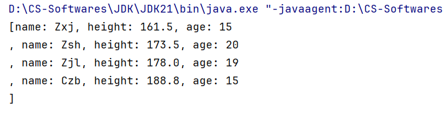
P3 使用Double包装类提供的compare方法简化上述代码
xxxxxxxxxx61Arrays.sort(students, new Comparator<Student>() {2 3 public int compare(Student o1, Student o2) {4 return Double.compare(o1.getHeight(), o2.getHeight());5 }6});